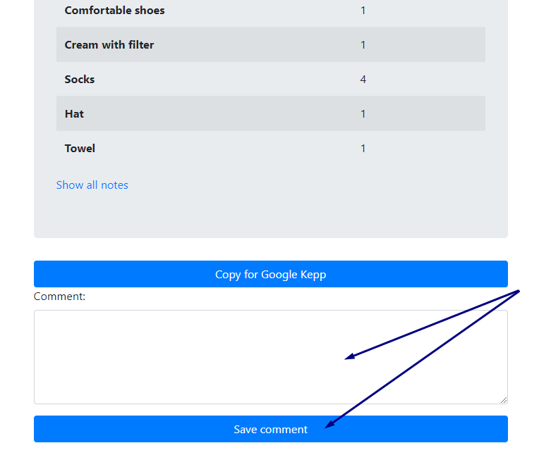

<!DOCTYPE html>
<html lang="en">
<head>
  <title>PackIT</title>
  <meta charset="utf-8">
  <link rel="icon" href="b.png" type="image/gif" sizes="16x16">
  <meta name="viewport" content="width=device-width, initial-scale=1">
  <link rel="stylesheet" href="https://maxcdn.bootstrapcdn.com/bootstrap/4.4.1/css/bootstrap.min.css">
  <script src="https://ajax.googleapis.com/ajax/libs/jquery/3.4.1/jquery.min.js"></script>
  <script src="https://cdnjs.cloudflare.com/ajax/libs/popper.js/1.16.0/umd/popper.min.js"></script>
  <script src="https://maxcdn.bootstrapcdn.com/bootstrap/4.4.1/js/bootstrap.min.js"></script>

  <style>
    body {background-image: url("suitcase.webp");
          background-repeat: no-repeat;
          background-attachment: fixed;
          background-position: center;
          background-size: cover;}
          </style>
  </head>
  </html>

  <body>
    <div class="container p-3 my-3 bg-white border">
  <h1>PackIT:  Aplikacja pomagająca przy pakowaniu do podróży</h1>
  <p>Aplikacja pomaga użytkownikowi stworzyć listę potrzebnych rzeczy do zabrania ze sobą na wyjazd do konkretnego kraju,
    w konkretnym terminie bazując na pogodzie i ogólnym klimacie miejsca, a także wybranych przez użytkownika aktywnościach</p>    <br>
 <br>
 <div class ="text-md-right">
  <a href="https://github.com/cerbin1/e-packing">GitHub Repozytorium</a></div>
 <a href="https://github.com/cerbin1/e-packing/projects/1">GitHub Board</a></div>
  </div>
  <div class="container p-3 my-3 bg-white border">
 <ul class="list-group">
     <h4>Cechy:</h4>
     <ul>
    <li>Prosta w użyciu</li>
    <li>Możliwość logowania przez Google</li>
    <li>Możliwość przeglądania historycznych notatek</li>
    <li>Możliwość komentowania notatek po podróży</li>
    <li>Uwzględnia warunki pogodowe i czynności jakie użytkownik planuje wykonywać podczas wyjazdu</li>
</ul> 
</ul>
</div>
<div class="container p-3 my-3 bg-white border">
  <ul class="list-group">
    <h4>Funkcje:</h4>
    <ul>
   <li>Rejestracja konta</li>
   
   <li>Logowanie się na utworzonym wcześniej koncie, jak i przez konto Google</li>
   
   
   <li>Zapisywanie listy z każdej podróży i umożliwienie przeglądania historycznych danych</li>
   
   
   <li>Możliwość dodania notatki po wyjeździe do danej listy zapisując, czego brakowało albo co się nie przydało</li>
   
   
   <li>Tworzenie nowej listy</li>
   <ul>
   <li>podanie terminu (od do)</li>
   <li>podanie kraju</li>
   <li>możliwość dodania kilku dodatkowych kryteriów (pobyt na plaży, wycieczki w góry)</li>
   </ul>
   
   <li>Stworzenie listy możliwej do skopiowania i wrzucenia w google keep (opcja dostępna w szczegółach notatki) -> wystarczy kliknąć button, wejść w google keep i ctrl+v wkleić do listy</li>
   
   
</ul> 
</ul>

</div>

</body>